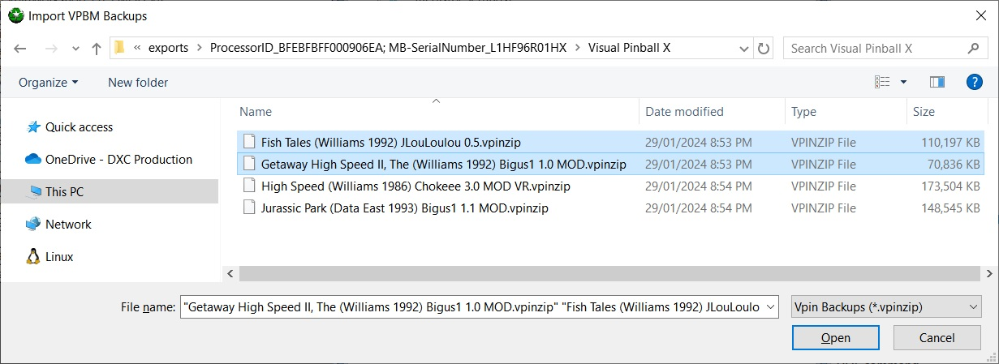
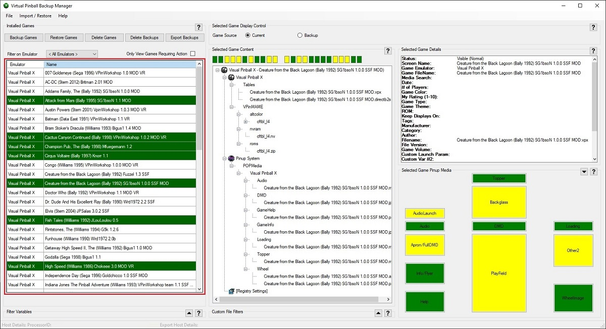

Virtual Pinball Backup Manager - managing your backups, one game at a time
Overview
Functionality exists to import new games into the system. This allows game backups, not currently stored by VPBM to be copied
to VPBMs backup folder structure, and to be restored from there - effectively performing an install of the games.
How to Import New Games
New games can be imported in one of two ways:
Import Games Using Import Menu
The following steps are used to import new games using menu options.
In the resulting Import Pinball Backups dialog, select one or more backups to restore.
Press the Open button to trigger the import.

Import Games By Dragging Files into Games List
The following steps are used to drag and drop.
Use the Windows File Explorer to locate the backup file(s) to import and select them.
Drag the files onto the VPBMsInstalled Games List (as highlighted in red) and drop them to
trigger the import.

What Happens During an Import
The import process adds one step to the process performed by the Restore Game Backups functionality, in that prior to the game being restored it is copied into the appropriate backup folder. As such, the full import process is:
Select the files to import.
Validate the files and copy the valid backups to the appropriate backup folder, based on emulator and game name extracted from the file.
Restore the game to disk.
NOTE: Should the imported game correspond to a game already found in the Pinup System database, the game will not be installed.